brain4D
nice 4D scatterplot
controls
mode (, ,  )
)
w rotation axis ( )
)
- Reset (
 )
)
data
Load prepared data:
ORDrop a CSV file here
instructions
Coded by crepererum
using glMatrix, Ucsv.js, normalize.css and Modernizr
nice 4D scatterplot
mode (, , )
w rotation axis ()
)Load prepared data:
ORCoded by crepererum
using glMatrix, Ucsv.js, normalize.css and Modernizr